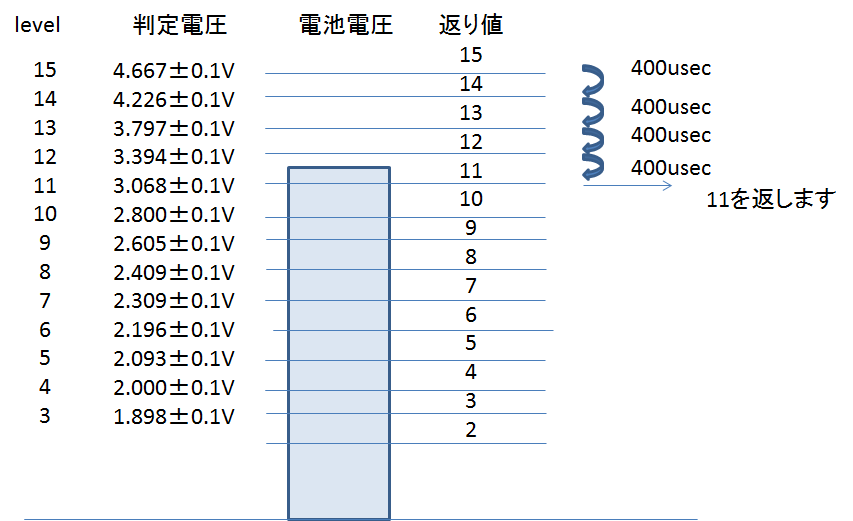

uint8_t voltage_check(uint8_t level);
電源電圧の測定を行う関数です。
電源電圧の測定は"level"で指定された電圧を下回っているかを判定します。電源電圧の方が低い場合は、判定レベルを1段階下げて再度測定を行います。電源電圧が判定レベルを上回ると測定を停止し、その時に判定していたlevelを戻り値で返します。
一回の電圧判定に必要な時間は約400usecなので、下図の場合は5回判定を行う為、約2msの測定時間がかかります。

測定を開始する電圧レベルを指定します。
電源電圧が判定レベルを上回ったら測定を停止し、その時のlevelの数値を返します。
サンプルプログラムの01.Basics\voltage_check\voltage_check.cで使用しています.